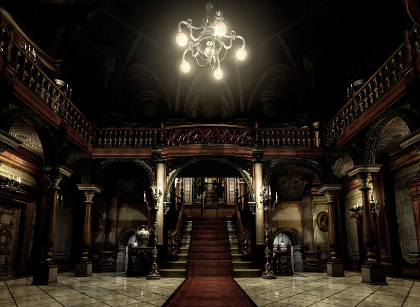
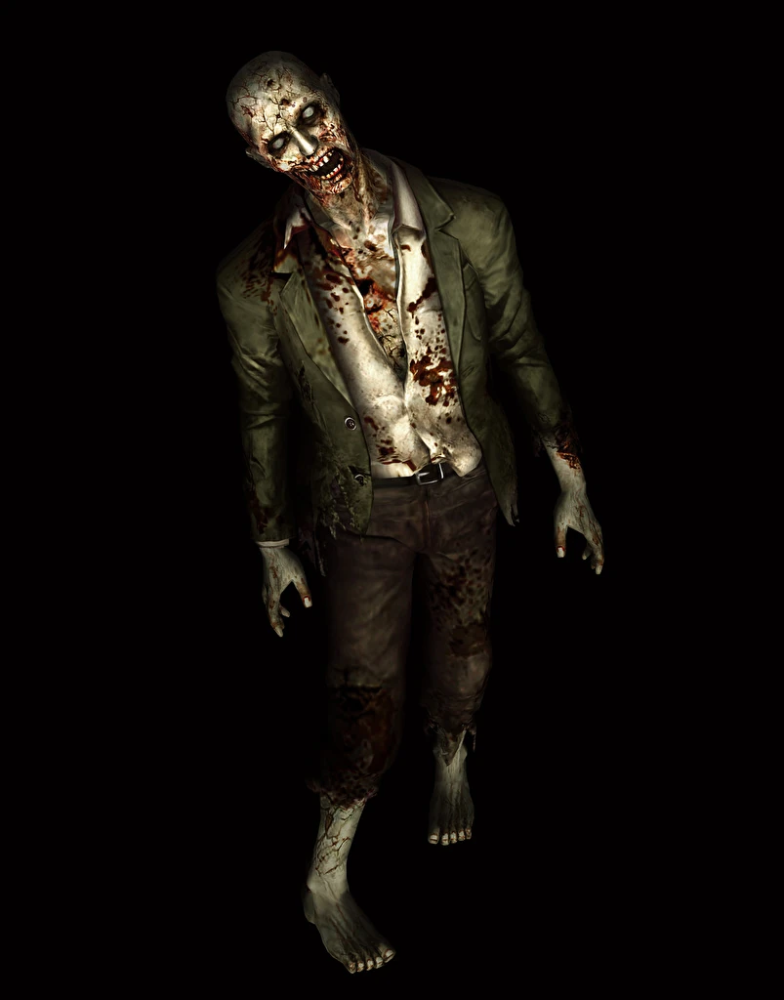
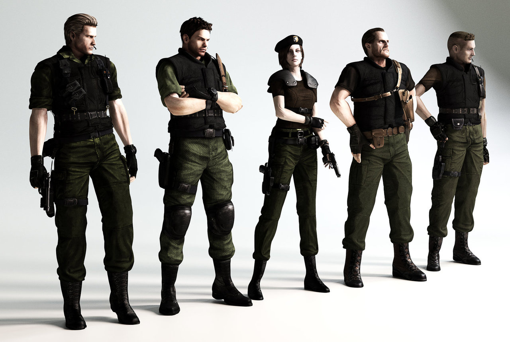

Visão geral

Resident Evil, lançado pela Capcom em 1996, é considerado o marco inicial do survival horror moderno. A história acompanha a equipe S.T.A.R.S. (Special Tactics and Rescue Service), enviada para investigar uma série de assassinatos misteriosos nas montanhas de Raccoon City.
Após serem atacados por criaturas bizarras, os membros da equipe se refugiam na Mansão Spencer, um local repleto de segredos, armadilhas, laboratórios e experimentos da Umbrella Corporation.
O jogador pode controlar Chris Redfield ou Jill Valentine, cada um com diferenças no gameplay, inventário e apoio de outros personagens.
Gameplay e mecânicas
O jogo se destaca por:
- Câmeras fixas que reforçam o clima de tensão;
- Munição e itens de cura limitados, forçando o jogador a planejar bem;
- Quebra-cabeças que exigem exploração e atenção a detalhes;
- Armas variadas, como pistola, shotgun e lança-granadas.
A sensação de vulnerabilidade é um dos pontos mais fortes: muitas vezes é melhor fugir do que gastar recursos enfrentando inimigos.
História e atmosfera
A Mansão Spencer funciona quase como um personagem próprio: cada cômodo tem um clima diferente, com trilhas sonoras discretas e efeitos sonoros marcantes (passos, portas rangendo, gemidos de zumbis à distância).
Conforme a história avança, o jogador descobre arquivos e diários que revelam o desenvolvimento do Vírus-T e os horrores criados pela Umbrella.
Análise
Mesmo com controles considerados “duros” pelos padrões atuais, Resident Evil (1996) ainda é muito respeitado pelo clima de terror, nível de desafio e importância histórica.
Sua combinação de exploração, tensão psicológica e gerenciamento de recursos influenciou inúmeros jogos posteriores.
Vendas aproximadas: 5 milhões de cópias.
Impacto: Inaugurou uma das franquias mais importantes dos videogames.
Curiosidades
- O jogo recebeu um remake completo para Nintendo GameCube em 2002.
- A famosa frase “Jill Sandwich” vem de uma cena de diálogo da versão original.
- No Japão, a franquia é conhecida como Biohazard.
- Há múltiplos finais, dependendo das ações do jogador.
Galeria de imagens


